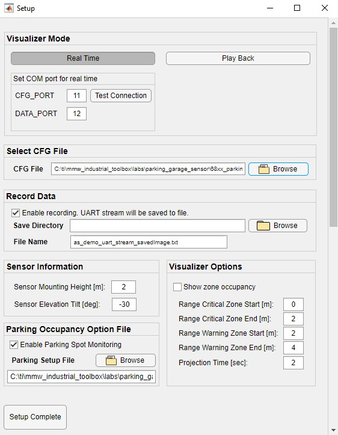
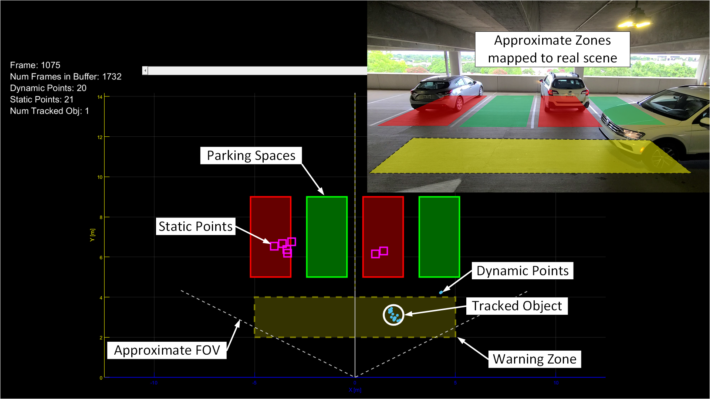
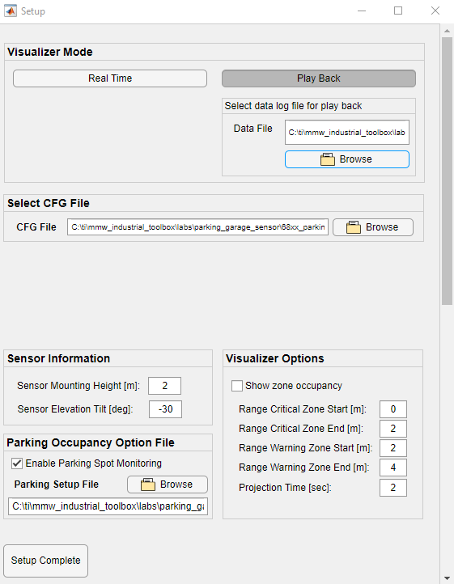
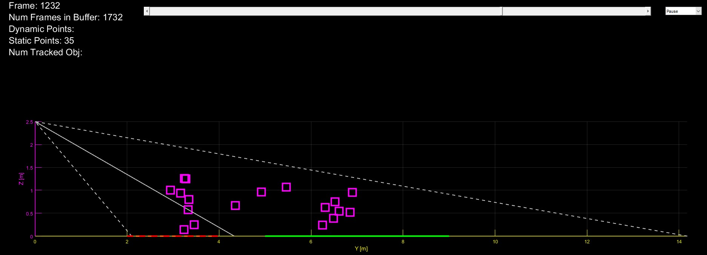

Overview of 68xx Parking Garage Occupancy Sensor
===========
This lab demonstrates the use of TI mmWave sensors for parking garage occupancy sensor applications.
The range, velocity, and angle data from mmWave sensors can enable the detection of parked or stationary cars as they enter or exit zones of interest / parking spaces.
Key features in this lab are the static detection and group tracking algorithms:
* The static detection algorithm allows for reflections from up to 4 stationary vehicles to be identified and accurately placed into pre-defined parking spaces.
Using the static detection algorithm enables the detection of static objects cars, trucks, and other large objects while ignoring the permanent static objects that comprise the scene such as poles, columns, and walls.
* With group tracking, the sensor is able to gauge a moving person's trajectory and speed, enabling the occupancy detection system to differentiate between the parked automobile and entering or exiting people.
The lab runs on the TI mmWave sensor IWR6843ISK EVM and includes a MATLAB visualizer.
<video width="640" height="360" autoplay loop controls>
<source src="images/ParkingGarageVid_withPtCloud.mp4" type="video/mp4">
Parking Garage Occupancy demo video
</video>
-----------
# Requirements
### Prerequisite
[[y! Run Out of Box Demo
Before continuing with this lab, users should first run the out of box demo for the EVM.
This will enable users to gain familiarity with the sensor's capabilities as well as the various tools used across all labs in the mmWave Industrial Toolbox. ]]
### Required and Supported mmWave Evaluation Modules (EVM)
#### ISK antenna module with MMWAVEICBOOST
Quantity | Item
------------------|-----------------
1 | Antenna Module Board: [IWR6843ISK](http://www.ti.com/tool/IWR6843ISK)
1 | OPTIONAL: [Industrial mmWave Carrier Board](http://www.ti.com/tool/MMWAVEICBOOST) for CCS based debugging
[[r! IWR6843 ES2.0 Only
This lab is only compatible with ES2.0 version of IWR6843.
On ISK, check the device version on your IWR6843 using the on-chip device markings as shown below
1. If line 4 reads `678A`, you have an ES2 device. In this case, this lab is compatible with your EVM.
2. If line 4 reads `60 GHZi`, you have an older ES1 device. In this case, the lab is NOT compatible with your EVM. ES2 IWR6843ISK boards are orderable from the EVM link above.
<img src="../../../docs/hardware_guides/images/iwr6843_silicon_revision.png" width="300"/>
]]
### Additional Hardware Requirements
Quantity | Item | Details
---------|--------------------------|-----------------
1 | Computer | Windows 7 or 10 PC
1 | Micro USB Cable |
1 | Power Supply | If using MMWAVEICBOOST, a 5V, 3A with 2.1-mm barrel jack (center positive). The power supply can be wall adapter style or a battery pack with a USB to barrel jack cable.
### Software
Tool | Version | Download Link
----------------------------|---------------------------|--------
TI mmWave SDK | 3.5.0.4 | [Link to Latest mmWave SDK](http://software-dl.ti.com/ra-processors/esd/MMWAVE-SDK/latest/index_FDS.html). To access a previous version of the mmWave SDK scroll to the bottom of the table and click the link under "MMWAVE-SDK previous release". Repeat to continue stepping back to previous versions.
mmWave Industrial Toolbox | Latest | Download and install the toolbox. Go to [Using TI Resource Explorer & the mmWave Industrial Toolbox](../../../docs/readme.html) for instructions.
MATLAB Runtime | 2019a (9.6) | Exact version required. https://www.mathworks.com/products/compiler/matlab-runtime.html
Uniflash | Latest | Uniflash tool is used for flashing TI mmWave Radar devices. [Download offline tool](http://www.ti.com/tool/UNIFLASH) or use the [Cloud version](https://dev.ti.com/uniflash/#!/)
Silicon Labs CP210x USB to UART Bridge VCP Drivers | Latest | Only needed for if using EVM in standalone mode. [https://www.silabs.com/products/development-tools/software/usb-to-uart-bridge-vcp-drivers](https://www.silabs.com/products/development-tools/software/usb-to-uart-bridge-vcp-drivers)
-----------
# Quickstart
===========
The quickstart guide will cover setting up the EVM, flashing firmware, and running the demo.
## 1. Setup the EVM for Flashing Mode
* For MMWAVEICBOOST + Antenna Module setup: Follow the instructions for [Hardware Setup for Flashing in MMWAVEICBOOST Mode](../../../docs/hardware_guides/evm_setup_operational_modes.html)
* For IWR6843ISK in Standalone/Modular Mode: Follow the instructions for [Hardware Setup of IWR6843ISK for Flashing Mode](../../../docs/hardware_guides/evm_setup_operational_modes.html)
## 2. Flash the EVM using Uniflash
Flash the binary listed below using UniFlash. Follow the instructions for [using UniFlash](../../../docs/software_guides/using_uniflash_with_mmwave.html)
BIN Name | Board | Location
------------------------------|-----------------|-----------
parking_garage_sensor_68xx_demo_isk.bin| IWR6843ISK | `<INDUSTRIAL_TOOLBOX_INSTALL_DIR>\mmwave_industrial_toolbox_<VER>\labs\parking_garage_sensor\`<br>`68xx_parking_garage_sensor\prebuilt_binaries\isk`
## 3. Setup the EVM for Functional Mode
* For MMWAVEICBOOST + Antenna Module setup: Follow the instructions for [Hardware Setup of MMWAVEICBOOST + Antenna Module for Functional Mode](../../../docs/hardware_guides/evm_setup_operational_modes.html)
* For IWR6843ISK in Standalone/Modular Mode: Follow the instructions for [Hardware Setup of IWR6843ISK/ODS for Functional Mode](../../../docs/hardware_guides/evm_setup_operational_modes.html)
At this point, the EVM should be powered, connected to the PC, flashed with the demo, and put in functional mode. The hardware setup is now complete.
## 4. Run the Lab
### 1. EVM Mounting and Scene Conditions
The EVM should be mounted:
- Elevated 2-3m from the ground (mounting height)
- Oriented with the Z-axis towards the ceiling and the Y-axis pointed straight towards the scene of interest. (See EVM images at the top for orientation of axes)
- Tilted in elevation downwards 10-30 deg (θ = -10 or -30)
The static detection algorithm used in this lab records a scene calibration meausurement for the first 15 frames after the CFG file is loaded to the device.
This means the scene should be clear of "temporary" cars and people. The recorded calibration scene will be used to determine whether new static cars have entered the scene.
This calibration or background scene will be saved to the flash when setting the heatmapGenCfg.recordingMode=1 in the CLI configuration. This is preset in the parking_garage_sensor_68xx_ISK_setFlashRecord.cfg file.
After saving this scene calibration to the flash, the device will be automatically restarted and use the saved data.
For future powercycles where the sensor isn't moved, the software can load the scene calibration from flash by setting heatmapGenCfg.recordingMode=0 in the CLI configuration. This is preset in the parking_garage_sensor_68xx_ISK_getFlashRecord.cfg file.
If the "permanent" background scene changes or the sensor is moved, the calibration will need to be completed again.
### 2. Launch the Visualizer
[[y! MATLAB Runtime Version R2019a (9.6)
**Exact version** R2019a (9.6) required. Download from: https://www.mathworks.com/products/compiler/matlab-runtime.html
Other labs in the mmWave Industrial Toolbox may use version R2017a (9.2). For this lab, version R2019a (9.6) MUST also be installed. ]]
* Navigate to `<INDUSTRIAL_TOOLBOX_INSTALL_DIR>\mmwave_industrial_toolbox_<VER>\labs\parking_garage_sensor\68xx_parking_garage_sensor\gui`
* Double click to launch **parking_garage_sensor_visualizer.exe**
* A black console window will appear. After 30-60sec, a setup window will appear as shown below.
### 3. Configure Visualizer

**Visualizer Mode**
* Click the **Real Time** button
* In Real Time mode the visualizer will connect to given COM ports and parse the incoming stream for visualization
* In Play Back mode the visualizer will read in a txt file and enable a user to review the recorded byte stream from a real time session.
* Enter the COM ports associated with the mmWave EVM.
* Optional: Use **Test Connection** to ensure that COM ports are available and test command can be sent and received.
**Select CFG File**
* Use the **Browse** button to select the CFG file to load to the device or enter the full path and file name into the text field box.
* To load the demo CFG file navigate to `..\mmwave_industrial_toolbox_<VER>\labs\parking_garage_sensor\68xx_parking_garage_sensor\chirp_configs` and select the **parking_garage_sensor_68xx_ISK_demo_setFlashRecord.cfg** file for the ISK board.
* The first time the demo is run in a new installation or placement, the *_setFlashRecord.cfg file should be used. This has will save the bacground reference to the flash file to use for comparisons for static object detections across power cycles.
* Subsequent runs can use the *_getFlashRecord.cfg file to recall the background image from the flash and detect static objects.
**Record Data**
* Check the **Enable recording.** option to record the UART stream to a text file for play back later on. Enabling this option will log the byte stream in HEX format to a text file.
* Specify the **Save Directory** and **File Name** of the log file.
NOTE: The record data feature will automatically create a text file with the name specified at the save directory.
If there is already an existing file with the same name the file will be written over. Ensure path and/or file name are unique if this is not desired.
**Sensor Information**
* Sensor Mounting Height is the height of the EVM from the floor in meters
* Sensor Elevation tilt is the angle in degrees the sensor is tilted either upwards (+θ) towards the ceiling or downwards towards the floor (-θ)
**Visualizer Options**
The options in this panel will determine the areas and behavior of the zone occupancy warning. These are not used for parking spot ocupancy, but can be used as they are in the Area Scanner demo.
The demo defines two different regions:
* **Critical zone**: In this zone, the presence of any detected objects will trigger the zone to turn red. Use **Range Critical Zone Start** and **Range Critical Zone End** to specify in meters the radial distance from the sensor the region should start and end.
By default this is set to 0 to 2m. This means if there's any detected pt cloud or tracked object within 0-2m radially around the sensor - the zone will be triggered.
* **Warning zone**: In this zone, a moving, tracked object will trigger the zone to turn yellow if its current or or projected location is within the zone. Use **Range Warning Zone Start** and **Range Warning Zone End** to specify in meters the radial distance from the sensor the region should start and end. Typically, the critical zone end and warning zone start should be the same value.
* **Projection Time** is used to calculate the projected location of a tracked object. By default this is set at 2 seconds, meaning the object's location 2 seconds from the current time will be projected from it's velocity vectors and used in determining whether or not to trigger the warning zone indicator. A longer projection time will result in earlier warnings while a shorter projection time will give less warning time.
**Parking Occupancy Option File**
* Check the **Enable Parking Spot Monitoring** box to enable the parking spot occupancy logic and visualizion in the GUI.
* Use the **Browse** button to select the .CSV file containing the parking spot size configuration and filtering options.
* To load the parking occupancy settings file, navigate to `..\mmwave_industrial_toolbox_<VER>\labs\parking_garage_sensor\68xx_parking_garage_sensor\gui\parkingSetup` and select the desired CSV file. This file format is explained in the \parkingSetup\setupFileReadme.html file.
**Setup Complete**
* Confirm that the scene is clear of any "temporary" objects.
* When the scene is clear, click the **Setup Complete** button to confirm all the settings and send the config to the mmWave EVM.
* The setup window will close and the main visualizer plot will open next.
NOTE: If the mmWave EVM was is currently running the new config file cannot be resent. The visualizer will instead open and attempt to continue parsing the incoming UART stream. To ensure that the intended CFG file can be loaded, toggle NRST on the EVM before clicking 'Setup Complete'. (This should have already been done when the EVM was returned to Functional Mode).
### 4. Understanding the Visualizer Output
The window will open in a top-down, X-Y view of the scene.
NOTE: The data incoming from the sensor is relative to the sensor itself without consideration for its mounting position.
The visualizer transforms and translates the points based on the input sensor information during setup.
This is so Z = 0 on the plot correlates with the floor of the scene and the zones are defined on the same plane as the floor.

The visualizer will plot three types of detected object data:
* **Static Point Cloud** is represented by magenta squares and is the output of the static detection processing.
* The point cloud represents newly added static objects to the scene. Stationary vehicles will generate multiple static points per vehicle, so these points are what are used to determine the parking spot occupancy.
* The presence of multiple static points in an allocated parking spot will trigger the occupied indication. This detection settings are in the Occupancy Option CSV file.
* Static points outside the parking spots are plotted for visualization purposes but do NOT affect the occupancy decision.
* **Dynamic Point Cloud** is represented by cyan points and is the output of the traditional range-doppler processing chain (same processing chain as the Out of Box demo from the prerequisite section).
* Since the CFG file has static clutter removal enabled, the point cloud only shows detections for moving objects.
* Dynamic points will be created by moving vehicles or people
* **Tracked Objects** are the output of the GTRACK algorithm and are represented by white circles with a number inside for the tracked object's ID number. The dynamic point cloud is fed as input to the tracking algorithm which groups and tracks points across the scene.
* Vehicles and pedestrians will create tracks as they move around the scene.
To end the visualizer session, exit out using the "X" in the upper right corner. If Record Data was enabled this will also close the text file and end recording.
The visualizer saves the settings from the setup window and relaunching the visualizer will prepopulate any fields with the same values from the previous session.
### 5. Replay Data:

* Relaunch the visualizer
* Select **Play Back** mode
* Browse to and select the the .txt data file to load
* Browse to and select the CFG file used when the data was collected.
* Input the Sensor Information parameters. They should match what was used when the data was collected.
* The Visualizer Options and Parking Occupancy Option file can change for play back if desired. This can help to modify the occupancy logic in the CSV file if needed.
In addition to plotting the data coming from the mmWave EVM, the visualizer also draws reference lines to indicate the approximate azimuth and elevation field of view (FOV) of the sensor.
Using the drop down menu in the left corner, users can switch to other views of the scene.
A useful view is the 2D, Y-Z view of the scene which gives an indicator of how the mounting height and down tilt affects the min and max detectable range of the sensor given the narrower elevation FOV.
The image below is from using the visualizer in play back mode to examine the Y-Z view. The view shows how the lower elevation FOV guideline intersects with the ground, marking the boundary for minimum detectable range.
Outside the guide lines, the antenna gain is below a threshold at which detection of objects can be difficult. When debugging missed detections it's important to consider the effect of sensor placement and mounting.

This concludes the Quickstart Section
-----------
# Developer's Guide
===========
* [Build the firmware from source code](#build-the-firmware-from-source-code)
* [Work with GUI source code](#work-with-gui-source-code)
Build the Firmware from Source Code
-----------
### 1. Software Requirements
Tool | Version | Download Link
----------------------------|---------------------------|--------------
TI mmWave SDK | 3.5.0.4 | [Link to Latest mmWave SDK](http://software-dl.ti.com/ra-processors/esd/MMWAVE-SDK/latest/index_FDS.html). To access a previous version of the mmWave SDK scroll to the bottom of the table and click the link under "MMWAVE-SDK previous release". Repeat to continue stepping back to previous versions.
Code Composer Studio | 10.2.0 or later | [Code Composer Studio v10](http://processors.wiki.ti.com/index.php/Download_CCS#Code_Composer_Studio_Version_10_Downloads)
mmWave Industrial Toolbox | 4.x.x | Download and install the toolbox. Go to [Using TI Resource Explorer & the mmWave Industrial Toolbox](../../../docs/readme.html) for instructions.
### 2. Import Lab Project
To import the source code into your CCS workspace, CCS projects are provided for the mmWave SDK Out-of-box demo in the mmWave Industrial Toolbox.
[[b! Project Workspace
When importing projects to a workspace, the files are LINKED into the workspace. It is important to note that modifying the files in the CCS workspace will also affect the source files.
Practice version control in the case that revisions need to be reverted.]]
- Start CCS and setup workspace as desired.
- Import the project(s) specified below to CCS. See instructions for importing [here](../../../docs/readme.html#import-ccs-projects-from-the-mmwave-industrial-toolbox-into-code-composer-studio)
Project Name | Location in Industrial Toolbox
-------------------------|-----------------------------
parking_garage_sensor_68xx_dss | Do not import. Automatically imported with mss project.
parking_garage_sensor_68xx_mss | `<INDUSTRIAL_TOOLBOX_INSTALL_DIR>\mmwave_industrial_toolbox_<VER>\labs\parking_garage_sensor\68xx_parking_garage_sensor\src`
- Verify that the import occurred without error: in CCS Project Explorer both **parking_garage_sensor_68xx_dss** and **parking_garage_sensor_68xx_mss** projects should appear.
[[r! Error during Import to IDE
If an error occurs, check that the software dependencies listed above have been installed. Errors will occur if necessary files are not installed in the correct location for importing.
]]
### 3. Build the Lab
[[b! Note
The same lab projectspec is provided to support either the ISK, ODS, or AOP evm. Users can control which EVM to build for by setting the Active Build Configuration as shown below.
]]
1. Select the **parking_garage_sensor_68xx_dss** so it is highlighted. Right click on the project and select **Build Configurations** --> **Set Active** --> **isk**
2. Select the **parking_garage_sensor_68xx_mss** so it is highlighted. Right click on the project and select **Rebuild Project**. The DSS project will automatically build first and then the MSS project.
4. On successful build, the following should appear:
* **ISK:**
* In parking_garage_sensor_68xx_dss\isk, **parking_garage_sensor_68xx_dss_isk.xe674** (this is the C67x binary used for CCS debug mode)
* In parking_garage_sensor_68xx_mss\isk, **parking_garage_sensor_68xx_mss_isk.xer4f** (this is the Cortex R4F binary used for CCS debug mode) and **parking_garage_sensor_68xx_demo_isk.bin** (this is the flashable binary used for deployment mode)
[[b! Note
Please set same Active Build Configuration for both MSS and DSS project.
]]
{{y Selecting Rebuild instead of Build ensures that the project is always re-compiled. This is especially important in case the previous build failed with errors.}}
[[r! Build Fails with Errors
If the build fails with errors, please ensure that all the software requirements are installed as listed above and in the mmWave SDK release notes.
]]
[[b! Note
As mentioned in the [Quickstart](#quickstart) section, pre-built binary files, both debug and deployment binaries are provided in the pre-compiled directory of the lab.
]]
### 4. Execute the Compiled Lab
There are two ways to execute the compiled code on the EVM:
* **Deployment mode**: In this mode, the EVM boots autonomously from flash and starts running the bin image
* Use the **parking_garage_sensor_68xx_demo.bin** found at `<CCS_PROJECT_WORKSPACE_DIR>\parking_garage_sensor_68xx_mss\[Build-Folder]\` and follow the same process in the [Quickstart](#quickstart) section except flash this binary instead.
* **Debug mode**: This mode is is used for downloading and running the executable from CCS. This mode enables JTAG connection with CCS while the lab is running and is useful during development and debugging.
* Follow the [CCS Debug Mode Guide](../../../docs/software_guides/using_ccs_debug.html), using the binaries listed below where EVM type correlates to the selected build configuration .
* After CCS Debug mode is setup, launch the visualizer and proceed as described in the [Run the Lab section of the Quickstart](#4-run-the-lab)
Debug binary | Location | Connect and load to
---------------|----------------------|----------------------
parking_garage_sensor_68xx_dss_evm type.xe674 | `<CCS_PROJECT_WORKSPACE_DIR>\parking_garage_sensor_68xx_dss\<EVM-TYPE>\` | C674X_0
parking_garage_sensor_68xx_mss_evm type.xer4f | `<CCS_PROJECT_WORKSPACE_DIR>\parking_garage_sensor_68xx_mss\<EVM-TYPE>\` | Cortex_R4_0
-----------
# Work with GUI source code
-----------
{{y Working with and running the visualizer source files requires a full MATLAB license not just the MATLAB Runtime Engine}}
* The visualizer source files are located at `<INDUSTRIAL_TOOLBOX_INSTALL_DIR>\mmwave_industrial_toolbox_<VER>\labs\parking_garage_sensor\68xx_parking_garage_sensor\gui`
* Running parking_garage_sensor_visualizer.m results in the same fucntionality as the executable used inthe Quick Start section; please refer to the section for details.
* Files of interest:
* parking_garage_sensor_visualizer.m: Main visualizer script that calls the setup, parsing, and plotting functions.
* readUARTToBuffer.m: Copies any bytes available on the serial port object to a buffer in the Matlab workspace
* parseBytes: Receives the buffer and parses bytes into an output struct representing the data in the frame.
* isParkingSpotOccupied.m: Receives the static point cloud frame data and detection logic settings to determine if a parking spot is occupied or not.
# Data Output Format
-----------
Output packets with the detection information are sent out every frame through the UART.
Each packet consists of a Frame Header as shown below and a possibly variable number of TLV items containing various demo information.
Each TLV item consists of type, length, and payload information.
Since the length of the packet depends on the number of dynamic points, static points, and tracked objects it can vary from frame to frame.
The end of the packet is padded so that the total packet length is always multiple of 32 Bytes.
### Headers
#### Frame Header
Length: 44 Bytes
A Frame Header is sent at the start of each packet. Use the Magic Word to find the start of each packet.
| Value | Type | Bytes |
|----------------------------------------------------|-----------|-------|
| Magic Word | uint16_t | 8 |
| Version | unint32_t | 4 |
| Total Packet Length | unint32_t | 4 |
| Platform | unint32_t | 4 |
| Frame Number | unint32_t | 4 |
| Time [in CPU Cycles] | unint32_t | 4 |
| Num Detected Obj | unint32_t | 4 |
| Num TLVs | unint32_t | 4 |
| Subframe Number | unint32_t | 4 |
| Num Static Detected Obj | unint32_t | 4 |
#### TLV Header
Length: 8 Bytes
| Value | Type | Bytes |
|----------------------------------------------------|-----------|-------|
| Type | unint32_t | 4 |
| Length [num bytes] | unint32_t | 4 |
### Type Length Values (TLVs)
The number of TLVs in a given packet is extracted from the Frame Header. For each TLV,
there is a TLV Header containing Type and Length information. The Length value gives the length of the payload.
The payload should be parsed according to the appropriate Type identifier as listed in the tables below:
#### **Detected Object (Dynamic Points)**
Type: 1
Length: 16 Bytes x Num Detected Obj
The payload consists of 16 bytes representating positoin and doppler of EACH point in the dynamic point cloud.
Note: each point's position is given in spherical coordinates.
| Value | Type | Bytes |
|----------------------------------------------------|-----------|-------|
| range [m] | float | 4 |
| angle [rad] | float | 4 |
| elev [rad] | float | 4 |
| doppler [m/s] | float | 4 |
#### **Detected Object (Dynamic Points) Side Info**
Type: 7
Length: 4 Bytes x Num Detected Obj
The payload consists of 4 bytes for EACH point in the dynamic point cloud.
The values for snr and noise are determined as described in the doxygen documentation for the mmWave SDK Demo.
| Value | Type | Bytes |
|----------------------------------------------------|-----------|-------|
| snr | uint16_t | 2 |
| noise | uint16_t | 2 |
#### **Static Detected Object (Static Points)**
Type: 8
Length: 16 Bytes x Num Static Detected Obj
The payload consists of 16 bytes representating position and doppler of EACH point in the static point cloud.
Note: each point's position is given in cartesian coordinates.
| Value | Type | Bytes |
|----------------------------------------------------|-----------|-------|
| x [m] | float | 4 |
| y [m] | float | 4 |
| z [m] | float | 4 |
| doppler [m/s] | float | 4 |
#### **Tracked Object List**
Type: 10
Length: 40 Bytes x Num Tracked Objects
The payload consists of 40 bytes for EACH tracked object, giving the ID, position, velocity, and acceleration components of each target.
| Value | Type | Bytes |
|----------------------------------------------------|-----------|-------|
| Target ID | uint32_t | 4 |
| pos X [m] | float | 4 |
| pos Y [m] | float | 4 |
| vel X [m/s] | float | 4 |
| vel Y [m/s] | float | 4 |
| acc X [m/s^2] | float | 4 |
| acc Y [m/s^2] | float | 4 |
| pos Z [m] | float | 4 |
| vel Z [m/s] | float | 4 |
| acc Z [m/s^2] | float | 4 |
#### **Point to Track Association**
Type: 11
Length: 1 Byte x Num Detected Obj
The payload consists of 1 byte for EACH point in the dynamic point cloud.
If point _n_ was associated to a target, the value of Target ID will be the ID of the associated Target.
Otherwise, the value will indicated the reason the point was not associated.
| Value | Type | Bytes |
|----------------------------------------------------|-----------|-------|
| Target ID | uint8_t | 1 |
where Target ID can have the following values:
| Value | Meaning |
|----------------------|-----------------|
| <250 | The ID of the tracked object the point has been associated to |
| 253 | Point not associated, doesn't meet SNR requirements |
| 254 | Point not associated, located outside Boundary Box area |
| 255 | Point not associated, considered noise |
# Need More Help?
===========
* Additional resources in the documentation of the mmWave SDK:
* mmWave SDK Module Doc located at `<mmwave_sdk_install_dir>/docs/mmwave_sdk_module_documentation.html`
* mmWave SDK User's Guide located at `<mmwave_sdk_install_dir>/docs/mmwave_sdk_user_guide.pdf`
* Search for your issue or post a new question on the [mmWave E2E forum](https://e2e.ti.com/support/sensor/mmwave_sensors/f/1023)